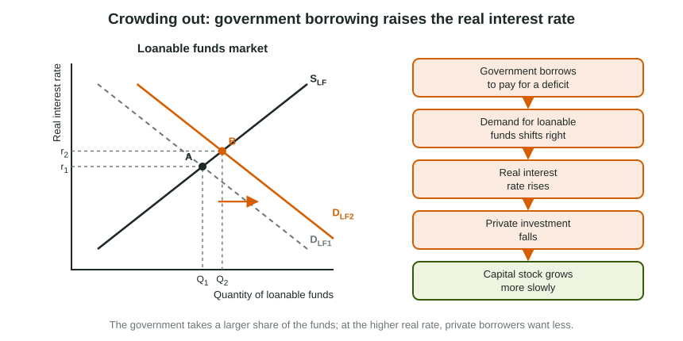

Crowding Out
When a government borrows to pay for a deficit, the demand for loanable funds rises and the real interest rate rises.
Part 1 · Hook
Why this matters
Part 2 · Before you start
What this builds on
Part 3 · Prerequisite check
Quick check before you start
1. On the loanable funds graph, what does government borrowing to cover a deficit do?
- It shifts the demand for loanable funds right
- It shifts the supply of loanable funds right
- It shifts the money supply left
- It moves the economy along the supply curve only
Show the answer
The government is an extra borrower, so demand for loanable funds rises.
- Correct: It shifts the demand for loanable funds right:
- It shifts the supply of loanable funds right:
- It shifts the money supply left:
- It moves the economy along the supply curve only:
2. A government's outlays exceed its tax revenue this year. What does it do?
- It borrows the difference, adding to the national debt
- It repays part of the national debt
- It lowers the policy rate
- It runs a budget surplus
Show the answer
A deficit is financed by borrowing, which adds to the debt.
- Correct: It borrows the difference, adding to the national debt:
- It repays part of the national debt:
- It lowers the policy rate:
- It runs a budget surplus:
Part 4 · See it
See it first

Part 5 · Step by step
How it works, step by step
- The government runs a deficit and borrowsthe demand for loanable funds shifts right
- Demand for loanable funds risesthe real interest rate rises
- The real interest rate risesprivate investment and interest-sensitive consumption fall
- Private investment fallspart of the rise in AD from the deficit spending is offset
- Investment stays lower year after yearthe capital stock and potential output grow more slowly
Part 6 · Key ideas
Key ideas
- Crowding out: government borrowing raises the real interest rate, and private investment falls.
- Draw it on the loanable funds graph: Real interest rate (vertical), Quantity of loanable funds (horizontal); government borrowing shifts DLF right (or, in another view, lower public saving shifts SLF left). Either way the real rate rises.
- In the short run crowding out shrinks the AD effect of deficit spending. In the long run it leaves a smaller capital stock, so potential output grows more slowly.
- Crowding out is largest near full employment and smallest in a deep recession, when private borrowing is weak.
Part 7 · Misconception
A common mistake
The wrong idea: Deficit spending lowers the real interest rate, because the government puts money into the economy.
What actually happens: To spend more than it collects, the government borrows. That adds to the demand for loanable funds, so the real interest rate rises and private investment falls.
Part 8 · Check yourself
Check yourself
Exam-style questions. Anything you miss goes into your review queue.
1. A government increases its budget deficit and borrows to pay for it. Show the effect on the loanable funds market and mark the new equilibrium.
Work on the graph (it needs JavaScript), then check.
Show the answer
The government is an extra borrower, so the demand for loanable funds shifts right and the real interest rate rises. (Drawing the deficit as lower public saving, the supply of loanable funds shifting left, also raises the real interest rate and is also accepted.)
- Key: the demand for loanable funds shifts right
Graph
The loanable funds market in Garrow (invented) after more government borrowing
2. The graph shows Garrow's loanable funds market after its government increased its borrowing. What happened to the real interest rate?
- It fell, because the government added funds to the market
- It rose, because the supply of loanable funds decreased
- It rose, because the demand for loanable funds increased
- It stayed the same, because the quantity of funds also rose
Show the answer
More borrowing shifts demand right, and the real interest rate rises.
- It fell, because the government added funds to the market: The government is borrowing, so it takes funds out; demand rose and the rate rose.
- It rose, because the supply of loanable funds decreased: The graph shows the demand curve moving; supply stayed put.
- Correct: It rose, because the demand for loanable funds increased: Right: DLF shifted right along an upward-sloping supply curve, so the new crossing E2 is higher: the real interest rate rose from r1 to r2.
- It stayed the same, because the quantity of funds also rose: The quantity rose, but along a supply curve that slopes up, which means a higher rate.
3. The total quantity of loanable funds is larger on the graph. Why does private investment in Garrow still fall?
- The government takes part of the larger quantity, and at the higher real rate private borrowers want less
- Private investment rises, because the total quantity of funds rose
- Savers lend less at the higher real rate, so there is less to invest
- Firms invest less because the government's spending lowers their costs
Show the answer
This is crowding out: government borrowing raises the real interest rate, and private investment falls.
- Correct: The government takes part of the larger quantity, and at the higher real rate private borrowers want less: Right: private firms move up along their own demand as the rate rises, so they borrow less; the government's borrowing makes up more than the increase in the total.
- Private investment rises, because the total quantity of funds rose: The extra quantity, and then some, goes to the government; private borrowing falls at the higher rate.
- Savers lend less at the higher real rate, so there is less to invest: Savers lend more at a higher rate; supply slopes up.
- Firms invest less because the government's spending lowers their costs: Lower costs would encourage investment; the cause is the higher cost of borrowing.
4. If Garrow keeps borrowing this way for many years, what happens to its capital stock and potential output?
- Both grow faster, because government spending replaces private investment
- Both grow more slowly than they would have, because private investment is lower
- The capital stock grows faster but potential output grows more slowly
- Neither changes, since the borrowing affects interest rates rather than real output
Show the answer
Crowding out has a long-run cost: a smaller capital stock and slower growth of potential output.
- Both grow faster, because government spending replaces private investment: Spending on current services does not add to the capital stock the way private investment does.
- Correct: Both grow more slowly than they would have, because private investment is lower: Right: investment adds factories and machines; with less of it the capital stock and the economy's capacity grow more slowly.
- The capital stock grows faster but potential output grows more slowly: Less investment means slower growth of the capital stock, not faster.
- Neither changes, since the borrowing affects interest rates rather than real output: Interest rates change investment, and investment builds the capital stock that sets potential output.
Scenario
Deficit spending in Ferro (invented country)
Ferro, an invented country, is at full employment. Its legislature raises government spending by 100 billion dollars a year and pays for it by borrowing, so the budget deficit grows. Assume Ferro's central bank takes no action.
5. Build the crowding-out chain for Ferro.
Build the answer part by part, then write it in your own words.
Show the answer
Borrowing raises the demand for loanable funds, the real interest rate rises, private investment falls, and the capital stock grows more slowly.
- An answer that earns the point: The government borrows, so the demand for loanable funds rises. The real interest rate rises, which makes borrowing costlier for firms, so private investment falls, and as a result the capital stock grows more slowly.
6. Which graph shows crowding out most directly, and with which axis label?
- The loanable funds market, with the real interest rate on the vertical axis
- The money market, with the real interest rate on the vertical axis
- The loanable funds market, with the nominal interest rate on the vertical axis
- The AD-AS graph, with the interest rate on the vertical axis
Show the answer
Loanable funds: real interest rate and quantity of loanable funds. Money market: nominal interest rate and quantity of money.
- Correct: The loanable funds market, with the real interest rate on the vertical axis: Right: crowding out works through the real interest rate that savers earn and borrowers pay.
- The money market, with the real interest rate on the vertical axis: The money market's vertical axis is the nominal interest rate, not the real one.
- The loanable funds market, with the nominal interest rate on the vertical axis: Loanable funds are priced by the real interest rate; "nominal" there loses the label point.
- The AD-AS graph, with the interest rate on the vertical axis: The AD-AS graph has the price level on its vertical axis.
Part 9 · Summary
Summary
Part 10 · Up next
What comes next
Part 11 · Connections